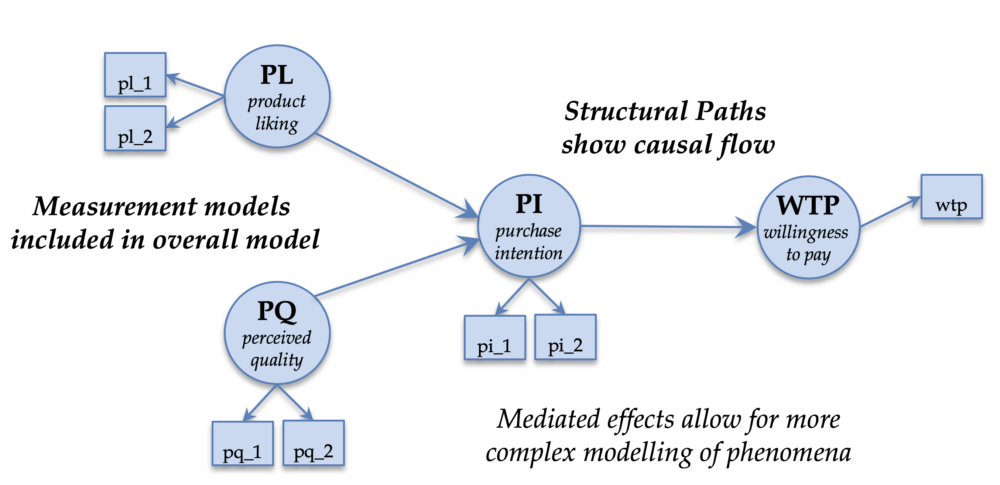

Structural Equation Modeling in HCI Research using SEMinR
A CHI 2023 course
Welcome to the course website for the SEM in HCI course at CHI 2023. The course will be held virtually on April 18th from 3pm CET (when in my timezone?) until 8pm CET.
The course costs 75 USD + 19% VAT.
Course content
This course is an introduction to PLS-SEM for HCI researchers and practitioners that are interested in a streamlined and robust way to work with human data. PLS-SEM will be taught using the open-source SEMinR R package. We will lay out why PLS-SEM might be interesting for your research and how to construct and test a model in SEMinR.

Click here for more course details.
Click here for more the course notes.
Why should I take this course?
PLS-SEM or partial least squares structural equation modelling is a powerful method to build and test models for your data. This method allows the researcher to simultaneously test the validity of their measurement instrument (e.g., the survey) and the relationship between model variables, e.g., perceptions, attitudes, and behavior. A further advantage is that PLS-SEM is comparatively robust to small samples and non-parametric data, both issues that often occur in HCI research.
Click here for more details.
Is this course for me?
The intended audiences of the course are: Academic researchers including Masters and doctoral students as well as industry researchers that are interested in thoroughly understanding their users including the users’ motivations and behavior.
Who will be my teachers?
The course will be taught by André Calero Valdez, Lilian Kojan, Nicholas Danks and Soumya Ray. The instructors include key authors, maintainers, and contributors of the SEMinR package.
For more details go here.
How do I register?
If you are not yet registered for CHI, CLICK THIS LINK: https://cvent.me/YbG5VD
- Scroll to the bottom of the page and select the appropriate category button (Member or Non-Member) to begin your registration.
- Register - fill in all the required information needed for registration to attend CHI 2023.
- Proceed to the Optional Items page – select the course from the list and click next at the bottom of the page.
- Continue through registration to complete by making a payment and clicking “Submit”. A confirmation email is automatically generated.
If you are adding a course to your existing registration, CLICK THIS LINK: https://cvent.me/YbG5VD.
- Scroll towards the bottom and click on the “Already Registered” option. Do not begin a new registration if you are already registered for CHI 2023.
- Enter your email address and confirmation code – found in your confirmation email.
- Click “Login” to proceed, then select “Modify Registration” towards the bottom on the next page.
- Proceed through your registration (“Next” button until the Optional Items page) to add the desired course.
- Select your course from the list and click “Next” at the bottom.
- Follow through to complete the addition by making a payment and clicking “Submit”.
Last updated 2023-04-11 12:49:15